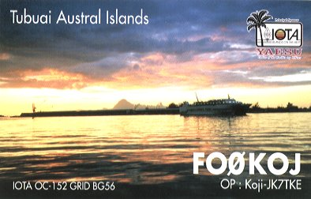

South Cook IsからQRVしていたZK1AA
1971年3月8日にCWでQSOした時のQSL
このリポートは 1エリアの入感状況です
全国版50MHz DX Clusterも参考にして下さい
TIME:UTC(JST=+09:00)
Flash ! DX の読み方
【Back Issues Jan.2000】
31.Jan.2000(13:00h) *VK-TV 00:30- 46.172/240 -- weak *DU-TV? 01:30- 48.251 -- *VK-TV 03:00- 46.172/240 -- *ZL-TV 04:00- 45.24/25/26-- *ZL-Audio 04:30- 50.760 FM TV-Audio ZL2TPY 04:46 50.110/115 SSB ZL3TY 04:50 50.110 CW ZL2KT 04:55 50.110 SSB VK5KL 05:38 50.107/110 CW ZL3NE 05:39 50.110 CW *9M-TV 05:40- 48.240/260 -- V73SIX 05:40- 50.014 CW Beacon ZL3NE 06:05 50.110 CW ZL1WTT 06:10 50.110/132 SSB ZL3TY 06:19 50.135 SSB VK3OT 06:25 50.110 CW VK3AXH 06:30 50.110 SSB BY-TV 06:30- 49.750 -- ZL2TPY 06:42 50.147 SSB 9V1UV 06:55 50.110 SSB ◎ 午後から昨日同様ZL'sが入感。信号はそれほど強くないが、長時間聞こえていた。西方向の バズの中から久しぶりに9V1UVが入感。 30.Jan.2000(13:00f) *ZL-TV 01:30- 45.24/25/26-- *VK-TV 01:30- 46.172/240 -- weak *ZL-Audio 02:00- 50.750 FM TV-Audio ZL2TPY 02:13 50.110/145 SSB/CW ZL3SIX 06:30- 50.040 CW Beacon *ZL-Audio 06:30- 50.760 FM TV-Audio ZL3TGC 06:31 50.110/130 SSB ZL3JT 06:41 50.100 CW ZL3NW 06:42 50.170 SSB ZL3GS 06:44 50.140 SSB ZL3TIB 06:48 50.110 SSB VK3DUT 07:20 50.110/130 SSB ZL3JT 07:30 50.110 CW ZL2TPY 08:19 50.110/146 CW P29BPL 08:40- 50.029 CW Beacon ◎ 午前中から夕方までZL'sが良く聞こえていた。昨日強力に入感していた東南アジア方面のTV も今日は静か。XZ0Aを運用していた"JAグループ"は今日の午後QRTしたので、XZ0Aの6mのQRVも 終了した。 29.Jan.2000(13:00e) *ZL-TV 01:30- 45.24/25/26-- *VK-TV 02:00- 46.172/240 -- V73SIX 02:25- 50.014 CW Beacon V73AT 02:27 50.110 CW VK4RGG 02:52- 50.058 CW Beacon VK4CP 02:53 50.110/130 SSB VK4KK 02:56 50.110/180 SSB VK2EDB 03:15 50.103 CW V73AT 06:30 50.110 SSB P29BPL 07:00- 50.029 CW Beacon VK4KK 07:11 50.110 CW VK4GPS 07:17 50.110 SSB VK4BG 07:26 50.110 SSB VK4APG 07:26 50.110 CW VK4AJS 07:30 50.110 SSB *9M-TV 07:40- 48.240/260 -- 9M2NK 07:40 50.107 CW 9M6SMC 07:50- 50.015 CW Beacon VK7GUN 08:58 50.110/180 SSB VK7ZPB 09:04 50.110 SSB VK4DUG 09:04 50.110 SSB VK7RST 09:05- 50.298 CW Beacon VK7RAE 09:06- 50.057 CW Beacon VK3ZXR 09:11 50.110/140 SSB ◎ 日中は強力な45/46MHz帯のTVに続いてVK2/4が入感してきた。50MHz帯"ぎりぎり"のパスのせ いか、信号は不安定。VKがフェードアウトすると同時に東南アジア方向が上昇、久しぶりに9M2NK、 9M6SMC/Bが聞こえてきた。 07:30z頃からXZ0AをコールするJA2のパイルアップが聞こえたが、こ の時間には1エリアではXZ0Aの信号は確認出来なかった。このオープン後に29.260MHzのFMにQRV してきたXZ0A(OP JA1UPA)によると、6mでのQSOは10数局だったと。 夕方から再びVK3/4/7が入感。この時間のVKへのパスは西日本が有利。 28.Jan.2000(10:00d) *ZL-TV 01:00- 45.24/25/26-- *VK-TV 02:00- 46.172/240 -- P29BPL 07:15- 50.029 CW Beacon P29PL 07:20 50.110 SSB QSL via VK9NS P20OOP 07:22 50.110 SSB QSL via P29 Buro ◎ 昼前後に49MHz帯のVK/ZLのTVが何時も通りに上昇。ただしこの時間帯には50MHz帯までコ ンデションが上昇してこないのも何時ものパターン。 07:00z過ぎにP29BPLのビーコンと共にP29PLが強力に入感。07:20z頃から突如"ミレニアム記 念コールサイン"のP20OOPに変更、"JAサービス"を始めた。 P20OOPは07:42z頃にQRTしたが、その後もP29BPLのビーコンは良く聞こえていた。 ◎ 昨年暮れから太平洋の各エンティティーを廻って運用を続けているIK2GNWは、現在ZK1NCI のコールサインでNorth Cook Is(IOTA OC-014)から運用している。2月3日まで滞在する予定。 当初は1月14日からN.C.Iの運用を予定していたが、South Cook IsからZK1GNWを運用中にRig が故障したため、予備のRigがニュージーランドから届くのを待って、約2週間遅れでN.C.Iに 移動した。 160mから6m(周波数は50.115MHz)のオールバンドでの運用を予定していたが、後から送られた Rigが同じものなら、まだ6mでのQRVの可能性も残されている。 27.Jan.2000(13:00h) *ZL-TV 01:00- 45.24/25/26-- *VK-TV 02:00- 46.172/240 -- *9M-TV 05:30- 48.240/260 -- *BY-TV 05:30- 49.750 -- VK4RGG 07:24- 50.058 CW Beacon VK4KK 07:28 50.110 SSB/CW VK2DN 07:37 50.110 CW VK2QF 07:46 50.110 CW 9M2TO 08:35 50.130 CW/SSB ◎ XZ0A(Thahtay Khun Is)の6mの運用が26日午後からスタートした。早くも26日の夕方にJA1 でもQSOがリポートされている。今日は50.130MHzで9M2TOが良く入感していた。 ◎ VP6BR・Jukkaは予定通りPitcairn IsからQRVを始めた。今のところHF帯のハイバンドだけ だが、ダイポールに100Wの信号は予想以上に強力に入感している。 ◎ 1月22日-26日のKH2K/AH0は半年ぶりのKH0(Saipan is)からの運用。 週末の2日間は台風並みの季節風が吹き荒れ、クランクアップ・タワーに6mのアンテナも上げら れない状態だった。時期的に6mのオープンは期待していなかったのだが、地上高5mのルーフタ ワーに上げた6エレのアンテナで、1月23日の午前中にJA7、8の北日本とQSO出来た。 夕方(08:00z頃)から夜間(11:00z頃)にかけてもTVのバズと共にVR2が入感することもあり、KH0 付近とのコンデションはまるっきり"死んで"いる訳ではない。 22.Jan-26.Jan.2000(00:00a) ◎ 1月22日(土)から26日(水)までこのコーナーの更新はお休みします。 21.Jan.2000(13:00c) *ZL-TV 02:00- 45.24/25/26-- *VK-TV 04:30- 46.172/240 -- *9M-TV 06:00- 48.240/260 -- ◎ 昼前後にZL/VKのTVが上昇するのは何時もの通りだが、50MHz帯は相変わらず静か。真夏の 南半球は今がEsシーズンとなるので赤道越えのDX伝搬は暫く低調。 20.Jan.2000(14:00d) *ZL-TV 02:30- 45.24/25/26-- *VK-TV 02:30- 46.172/240 -- *BY-TV 04:30- 49.750 -- ◎ 3月初旬にFO0(Clipperton Is)からDX Pediの運用が計画されている。このPediにはメン バーの一人として、昨年H40OO、FO0KOJなどの6m運用の実績を持つJK7TKE・福井さんが参加 を予定している。 Clipperton Isは1992年のFO0CI以来、久しぶりの運用のため、2000年前 期のDX Pediの"目玉"の一つとして期待されている。 この1992年のFO0CIでは3月12日に6mでも02:00-04:00z頃にかけて弱いオープンがあったが、 QSO出来た局は少なかった。 今回のPediについては早くからインターネットのホームページなどで計画が発表されたが、 その後の具体的な情報は少なく、コールサインもまだ正式な発表はされていない。 当初発表された2月26日から3月15日の運用期間も、最新の情報で3月1日から3月9日と訂正さ れた。出発地の米国本土から現地まで船で"片道"6日を要するとのことなので、最初の日程は "航海の往復日数"も含めたものだった。これで実際に運用出来る期間は10日弱となった。 今後の情報は下記のHomepageで。
19.Jan.2000(13:00g)
*ZL-TV 02:20- 45.24/25/26--
*VK-TV 02:20- 46.172/240 --
*9M-TV 03:00- 48.240/260 --
9M2TO/b 06:30- 50.005 CW Beacon
*BY-TV 08:00- 49.750 --
VR2XMT 08:35 50.110 SSB
◎ 46MHz帯のZL/VKのTVが昼前から急上昇してきたが、50MHz帯の入感が無いまま、05:00zに
はコンデションは下降。 9MのTVの上昇と共に、06:30z頃から9M2TOのビーコンが良く聞こえ
ていた。
◎ Rotuma Isの3D2AG/R・Tonyは相変わらずアクティブにHF帯でQRVしている。「短期間では
6mは難しい！」と6mにはあまり乗り気でない返事だった。 Rotuma Isにはあと2日間の滞在。
◎ 1月下旬から5月までVP6BRのコールサインでPitcairn Isからの運用を予定しているOH2BR・
Jukkaは船でニュージーランドを出発、今日現在VP6BR/mmでQRVしている。
今日(19日)のJukkaからの情報によると、来週の月曜日(日本時間25日)にはPiticairn Is.に
到着する予定とのこと。 VP6BRでは160mから6mまでのオールバンドのQRVを予定しているが、
特に6mに興味を示しているのでコンデション次第ではJAからのQSOも期待出来る。
Pitcairn Is.からの6mは、1993年1月から5月までJF2MBF・市野さんが運用したVR6JJ以来で、
この時は1月29日にJAから初QSOに成功している。市野さんの精力的な運用にも関わらず、コ
ンデションが予想したほど上昇せず、5月に島を離れるまでにQSOしたJAは、僅かに37QSOだっ
た。(注)Pitcairn IsのコールサインはVR6からVP6に変更になった。
18.Jan.2000(13:00d)
*DU-TV 09:00- 48.250 --
*9M-TV 09:00- 48.240/260 -- weak
◎ 日中は"ソラーフレアーノイズ"がときおり聞こえるだけの静かな6m。珍しく45/46MHz帯の
TVも聞こえない。
◎ [続報・XZ0A]
前半の"6m担当"メンバーとして参加していたG3NOM(Ray)は昨日HSに帰国した。Rayから報告さ
れた現地の様子では、数台のHF帯のRig(FT-1000)は"フル稼動"しているが、50MHzが運用可能
なFT-847はまだ梱包されたままとのこと。HF帯の運用のため6mまで"手が回らない"のが理由。
XZ0Aは7カ国、24人のメンバーによる運用が予定されているが、入れ替わりで運用しているた
め、実際に"島"に滞在しているメンバーは少人数のもよう。 6mは"日本隊"が運用を開始する
27日まで"休止"?。
17.Jan.2000(13:00d)
*ZL-TV 00:20- 45.240/250 --
*VK-TV 00:20- 46.172/240 --
*ZL-TV 02:30- 45.24/25/26--
*9M-TV 07:00- 48.240/260 --
9M2TO/b 07:28- 50.005 CW Beacon
9M6SMC/b 08:30- 50.015 CW Beacon
*BY-TV 12:00- 49.750 --
*VK-TV 12:00- 46.172 --
*DU-TV 12:00- 48.251 --
DU1/GM4COK 12:34 50.110/115 SSB/CW
◎ XZ0A(Thahtay Khun Is)の6mの運用スケジュールは次の通り。
HF帯の運用は既に1月13日から始まっているが、6mの本格的な運用は日本からのメンバー(JA1UT、
JA1UPA、JR0CGJ)が到着する1月27日以降となる。メンバーは1月26日に日本を出発、27日午前中
に現地に到着する。早ければ昼頃からビーコン(50.115MHz)を発射すると。
1月31日には帰国の予定なので、運用は1月30日の昼頃まで。6mの設備はFT-655、2EL・HB9CV。
XZ0AのPediの運用日程は2月6日までだが、"日本隊"が担当している10m/FM、SSTVもスケジュー
ル的には、6mと同じ短期間の運用となる。
尚、10m/FMのJA向けの周波数は29.260MHz、US/EUは29.480MHzを予定している。(TNX JA1UT)
16.Jan.2000(15:00d)
*DU-TV 01:00- 48.250 --
*ZL-TV 02:45- 45.250 --
*DU-TV 07:00- 48.250 --
*9M-TV 07:00- 48.240/260 --
9M2TO/b 08:25- 50.005 CW Beacon
◎ 夕方になって弱い9M2TOのビーコンが聞こえていた。XZ0Aはオペレーターがまだ全員揃ってい
ないので6mの本格的な運用は遅れているもよう。
◎ 昨年10月中旬に突然6mにQRV、初日の10月17日に沖縄でもQSOに成功したBurundiの9U5D(Gus)
は、12月中旬から一時本国(Gus=SM5DIC)に帰国していたが、1月8日に再びBurundiに戻った。
今回は3カ月間の滞在予定なので、春のコンデション次第では沖縄を中心に6mでのオープンが再び
期待できるかも。
15.Jan.2000(13:00e)
*ZL-TV 02:50- 45.24/25/26--
*VK-TV 07:30- 46.172/240 --
*9M-TV 09:30- 48.240/260 --
◎ Eastern KiribatiのChristmas IsからT32DAのコールサインで出ているW4ZYV・Dickによる
と、Christmas Isでは6mの下側の50.110MHz付近はレーダー(Radar)のQRMがあり使えないため、
スポット的に混信の少ない50.220MHzで運用すると。 Dickは14.257MHzのSSBに出ているのでこ
の周波数をモニターすると良い。
14.Jan.2000(13:00e)
*ZL-TV 02:50- 45.24/25/26--
*VK-TV 07:30- 46.240 --
*DU-TV 08:20- 48.250 --
*9M-TV 08:20- 48.240/260 --
YC5/PA2GFL 09:02 50.110/107 CW
◎ 南太平洋方面のコンデションは昼前後にZLのTVが上昇する程度。昨日に続いて東南アジア方面
のTVが08:00z頃から上昇してきたものの、1エリアでは9M2TOのビーコンは聞こえない。
今日も"XZ0A"の入感は確認されなかったが、9M-TVと共にYC5/PA2GFLが入感していたので、パス
がもう少し西寄りに変われば"距離的"にもオープンの可能性は十分にある。
13.Jan.2000(14:00d)
*ZL-TV 02:30- 45.24/25/26--
*DU-TV 06:00- 48.250 --
*9M-TV 06:00- 48.240/260 --
*VK-TV 06:45- 46.172/240 --
VK3DUT 07:45 50.110/135 SSB
◎ XZ0A(Thahtay Khun Is)が今日からQRVを始めた。HF帯では早朝から入感していたが6mでは今の
ところまだ入感のリポートは無い。48MHz帯の9M-TVが入感したら"要注意"。周波数は50.115MHz。
◎ 昨年9月以来KH4(Midway Is.)から運用していたW4ZYV・Dickは、現在Eastern Kiribatiから
T32DAのコールサインでQRVしている。 6mにもQRV出来る様だがこのコンデションでのQSOは無理？。
◎ K6QXY・Bobのリポートによると、South Cook Isから長い間QRVしていたZK1AA・Stewartが
亡くなったとの事(日時は不明)。85歳だった。
South Cook Is初(唯一)の常駐局だったZK1AAが6mでJAに入感してきたのは1969年の春。
3月頃から6mの"VVV DE ZK1AA..."のビーコンが毎日の様に強力に入感していた。当時はHF帯でも
「ZK1」は珍しく、DX Peditionが行われる程のカントリーだった。この局とQSOするために、今ほ
ど"メジャー"なバンドではなかった6mにわざわざアンテナを上げてQRVしてくるHFのDXerもいたほ
ど。その後ZK1RS(1984)、ZK1XH(1989=JA1OEM)、ZK1XP(1991=JA1OEM)、昨年のZK1NJCなど短期
滞在の局と6mでQSO出来ている。ZK1AA・Stewartのご冥福をお祈りします。
12.Jan.2000(10:00b)
*DU-TV 01:20- 48.250 --
*9M-TV 01:20- 48.240/260 --
*ZL-TV 02:00- 45.24/25/26--
*VK-TV 04:00- 46.172/240 --
◎ 小雪がパラついた東京地方は日中も40MHz帯のTVが上昇しただけで6mはノイズだけの一日。
11.Jan.2000(13:00e)
*ZL-TV 02:00- 45.24/25/26--
*VK-TV 04:00- 46.172/240 --
VK3DUT 07:43 50.110/140 SSB
VK4RGG 07:50- 50.058 CW Beacon
P29BPL 07:54- 50.029 CW Beacon
VK2VC 07:58 50.110/150 SSB
P29PL 08:12 50.110/135 CW/SSB
VK2APG 08:16 50.120 SSB
VK4KK 08:16 50.110 CW
◎ 昼過ぎからVK/ZLのTVは上昇していたがVKが聞こえてきたは07:40z頃から。散発的に聞こえるVK
と共にP29BPLのビーコンが上昇してきた。直後にP29PLも入感したが10分程でフェードアウトした。
今日は一時間弱の短いオープン。
"停波"していたV73SIX(50.014)のビーコンが"復活"した、とV73AT・Timからの情報。
10.Jan.2000(13:00f)
*ZL-TV 02:00- 45.24/25/26--
*9M-TV 04:30- 48.240/260 --
9M2TO 07:35- 50.118 CW/SSB
◎ 久しぶりに9M2TO(本人)がフラッター気味の信号で入感していた。いつもより強力な48MHz帯の
9M-TVに比べて信号はあまり上昇して来なかった。50.005MHzの9M2TO/bのビーコンもこの時間には
聞こえていない。
09.Jan.2000(09:00h)
*ZL-TV 00:30- 45.24/25/26-- weak
*VK-TV 00:30- 46.240 --
*ZL-TV 03:00- 45.24/25/26-- strong
VK3OT 03:36 50.110 SSB
ZL4WA 03:39 50.108 CW
*9M-TV 04:30- 48.240/260 --
*BY-TV 04:30- 49.750 --
VK1RX 04:30 50.110/120 SSB
VR2XMT 04:43 50.110 SSB
VK8RAS 05:00- 50.047 CW Beacon
VK6RPH 05:00- 50.066 CW Beacon
VK6RSX 05:00- 50.304 CW Beacon
VK5AYD 05:17 50.130 SSB
VK6AKT 05:18 50.150 SSB
VK6WU 05:23 50.110/120 SSB
VK6ZAY 05:24 50.162 SSB
VK6GL 05:36 50.158 SSB
VK6RO 06:10 50.100/170 CW/SSB 06:27z→ VK6's F.out
VK3SIX 07:50- 50.053 CW Beacon
VK3OT 07:50 50.105 CW
◎ 昼過ぎからZL4が入感してきたが、直ぐにコンデションはVKに移り、西オーストラリアが強力に
入感。昨日のZL/VK3/7、今日のZL4/VK6とJAからの南北の伝搬は、比較的"足の長いパス"となって
いる。昨年のこの時期はZL9CIがQRVしていて6mは盛り上がっていたが、今年はMacqarie Is.から
運用をしているVK0MMの6mに期待したいところ。
(注)・Macqarie Is.からVK0LDが昨年末まで運用していたが2000年から"Macquarie Millennium"
のMMを付したVK0MMがQRVしている。 VK0MMはIC-706MK2とVee beamsで2000年12月31日まで運用
する。
08.Jan.2000(10:00h)
*ZL-TV 22:50- 45.240/250 --
*VK-TV 23:00- 46.172/240 --
VK7IK/3 00:45 50.110 SSB
VK4ADC 00:54 50.110/140 SSB
ZL2MQ 03:23 50.110 CW
3D2AG/P 03:26 50.110 SSB
ZL3NE 03:34 50.110 CW
ZL1UF 03:50 50.110/130 SSB
*9M-TV 04:00- 48.240/260 -- strong
VK3OT 04:06 50.110/106 CW
VK3AMK 04:10 50.102 CW
VK3YDE 04:14 50.110 SSB
VK3DUQ 04:18 50.145 SSB
VK3KLO 04:20 50.135 SSB
VK7IK/3 04:28 50.099 CW
VK3DQJ 04:33 50.145 SSB
VK7GK 04:36 50.130/095 SSB
VK3AKK 04:40 50.140 SSB
VK3ACR/M 04:42 50.152 SSB
VK7RAE 04:46- 50.057 CW Beacon
VK3SIX 04:46- 50.053 CW Beacon
VK5YM 04:51 50.130 SSB
VK3BDL 04:55 50.145 SSB
VK8MS 05:06 50.110 SSB 05:15z→ VK's F.out
DU1/GM4COK 07:10 50.111 CW
WH7C/DU3 07:30 50.125 SSB
DU1EGA 07:55 50.130 SSB
T88JR 08:20 50.115 SSB
T88MM 08:55 50.115 SSB
WH7C/DU3 09:20 50.115 CW
◎ 早い時間帯からZL/VKが入感していたが本格的に聞こえてきたのは昼過ぎから。南オーストラリ
アのVK3/7の信号が特に強力。夕方のDU'sと一緒に入感していたT88'sはオープンしているエリアに
"地域差"があり、オープン当初は西日本だけで、1エリアからはほとんどQSO出来なかった。
07.Jan.2000(10:00g)
*ZL-TV 00:40- 45.24/25/26-- weak
*VK-TV 00:40- 46.172/240 --
*9M-TV 02:20- 48.240/260 -- strong
*ZL-TV 03:00- 45.250 -- strong
*BY-TV 04:00- 49.750 -- strong
DU1/GM4COK 04:41 50.111 CW
9M2TO/b 06:14- 50.005 CW Beacon
VK4KK 06:49 50.110/160 CW/SSB
VK4RGG 06:49- 50.058 CW Beacon
VK2BHO 06:54 50.110 CW
VK4ARN 06:55 50.110/140 SSB QSO with ZL3TY
VK2BA 06:57 50.110 SSB CQ EU
VK2TG 06:58 50.110/170 SSB
VK2DN 07:35 50.110 CW
9M2TO/b 07:37- 50.005 CW strong → 09:00z still good !
VK4APG 07:42 50.110 SSB
◎ 午前中にVK/ZLとのオープンがリポートされているが、1エリアでは45/46MHzのTVも弱い。午後
から9M2TOのビーコンと共にVK2/4が強力に入感。
◎ 昨年10月にJK7TKE・福井さんによって運用されたFO0KOJ(Austral Is)のQSLの発送が開始された。
既にSASEの請求分については全て発行されている。 原則的にQSL受領後に発送する方式をとってい
るのでQSLが必要な方は早めに請求すること。 尚、昨年4月に運用されたH40(Temotu Is)のQSLに付
いても請求を忘れずに...。

06.Jan.2000(14:00d)
*ZL-TV 00:20- 45.24/25/26-- weak
*DU-TV? 00:20- 48.250 --
*VK-TV 03:45- 46.172/240 --
*9M-TV 07:30- 48.240 --
◎ 午前中に弱いZLのTV、昼過ぎにVKのTVが短時間上昇してきただけで6mバンドは"終日"静か。
05.Jan.2000(12:00e)
*ZL-TV 00:45- 45.24/25/26--
*VK-TV 03:30- 46.172 --
*9M-TV 03:30- 48.240 --
*BY-TV 06:00- 49.750 --
DU1/GM4COK 06:27 50.110 CW
9M6AAC 07:24 50.110 CW
◎ 昼過ぎにVK/ZLのTVが上昇してきたが長続きせずコンデションは低下。西方向に移ったコンデシ
ョンも短時間のオープン。
04.Jan.2000(14:00e)
*ZL-TV 03:45- 45.24/25/26--
*VK-TV 04:00- 46.172 --
ZL3TY 04:40 50.103 CW
*9M-TV 05:20- 48.240/260 --
DU1/GM4COK 08:55 50.110 CW
◎ 3日間続いたVK/ZLのFBなコンデションも、今日はZL3TYが短時間入感しただけで、昨日までとは
一転して静かな6mとなった。
03.Jan.2000(13:00i)
*ZL-TV 02:45- 45.24/25/26--
*VK-TV 03:45- 46.240 --
*9M-TV 03:45- 48.240/260 --
ZL3NE 04:02 50.110/100 CW
ZL3TY 04:03 50.110 SSB
ZL3SIX 04:13 50.040 CW Beacon
ZL4WA 04:33 50.106 CW
ZL3JT 04:46 50.110/100 CW
ZL2KT 04:48 50.140 SSB
ZL3TGC 04:51 50.165 SSB
ZMY2K 05:00 50.140 SSB OP.ZL2KT
*ZL-Audio 05:15- 50.750 FM ZL-TV Audio
ZL2MHB 05:14- 51.028 CW Beacon
ZL3TGC 05:16 50.150 SSB
ZL3GS 05:19 50.160 SSB
ZM3TIC 05:22 50.170 SSB
9M2TO/b 06:13- 50.005 CW Beacon
*DU-TV 06:30- 48.250 --
*BY-TV 06:30- 49.750 --
DU1/GM4COK 07:35 50.110 CW
JA1BRK/DU1 07:36 50.130 SSB
DU1EGA 08:24 50.135 SSB
DU1EV 08:25 50.140/094 SSB/CW
DU1EV 08:34 51.040 FM
VR2MQ 08:48 50.150 SSB
◎ 新年早々、3日連続のZL/VKのFBなオープンで今日も賑わった。毎年この時期にはZL/VKがオープ
ンしているが、コンデションが悪い、悪いと言われながらもやはりサイクルのピーク？だけあって
昨年に比べ入感の頻度も上がっている。
ニュージーランドの"ミレニアム記念局"・ZMY2Kが05:00zからZL2KTによってサービスされた。今日
は信号も強力で多くの局がQSO出来た。夕方からDU/VR2が強力に入感。
02.Jan.2000(11:00h)
*ZL-TV 02:50- 45.24/25/26--
*VK-TV 03:00- 46.172/240 --
ZL3TY 03:42 50.110/130 SSB
ZL3NW 03:49 50.110/160 SSB
VK4KK 03:54 50.110 CW
VK7MO 04:04 50.110/140 SSB
VK7GK 04:05 50.097 CW
ZL3SIX 04:15- 50.040 CW Beacon
VK7RST 04:16- 50.298 CW Beacon
ZL3GS 04:18 50.110/130 SSB
ZL3TY 04:24 50.107 CW
VK3OT 04:25 50.125/135 SSB
VK7JG 04:29 50.110 SSB
HL3IUA 06:41 50.110 CW
*9M-TV 07:00- 48.240/260 --
*DU-TV 07:00- 48.250 --
*BY-TV 07:00- 49.750 --
JA1BRK/DU1 07:21 50.110/120 CW/SSB
9M2TO/b 07:26- 50.005 CW Beacon
DU1/GM4COK 07:50 50.110 CW
DU1EV 08:00 50.130 SSB
DU1EGA 08:11 50.135 SSB
VR2ZUC 08:15 50.120 SSB
VR2K 08:26 50.150 SSB
VR2XMT 08:30 50.170 SSB
VR2IL 08:39 50.142 SSB
VR2K 08:40 50.135 SSB
VR2XRW 08:47 50.125 SSB
VR2BA 08:48 50.135 SSB
VR2YRC 08:50 50.160 SSB
BG7OH 08:53 50.180 SSB
VR2BG 09:43 50.155 SSB
VR2XMT 10:09 50.115 SSB
VR2ZST 10:15 50.165 SSB
◎ 昨日同様、午後からZL/VKがFBにオープン。50.150MHz付近は50.110MHzからQSYしたZLとQSOパー
ティーに参加しているJA'sが"同居"してQRM。夕方から南西方向のコンデションが上昇DU、VR2、BG7
が強力に入感。ホンコンの"ミレニアム記念局"・VR2Kは同時に2局聞こえていた。この強力なVR2の
オープンも10:15zに急激にダウンした。
01.Jan.2000(14:00e)
*DU-TV 01:00- 48.251 --
*9M-TV 01:20- 48.240/260 -- strong
9M2TO/b 01:39- 50.005 CW Beacon
*VK-TV 02:00- 46.172/240 --
*ZL-TV 02:00- 45.24/25/26--
VK2YR 02:47 50.110 SSB
VK7ZIF 02:48 50.120 SSB
VK7MO 02:48 50.140 SSB
VK7RST 02:49- 50.298 CW Beacon
VK7RAE 02:56- 50.057 CW Beacon
VK4RGG 02:59 50.077 CW Beacon
VK3OT 03:02 50.110 CW
VK7ZPB 03:19 50.130 SSB
VK3BDL 03:20 50.130 SSB
VK3KAI 03:23 50.135 SSB
VK3XQ 03:34 50.147 SSB
VK4BLK 03:35 50.153 SSB
VK3BBB 03:36 50.159 SSB
VK4CAW 03:39 50.110/130 SSB
VK4KK 03:41 50.110 SSB
VK7GK 03:43 50.100 SSB
ZL3GS 03:45 50.170 SSB
ZM3TIC 03:48 50.135 SSB
ZL3SIX 03:50 50.040 CW Beacon
VK3EK 03:53 50.165 SSB
VK7XR 03:57 50.148 SSB
VK3DUT 04:02 50.122 SSB
VK3OT 05:14 50.110 CW
ZL2AGI 05:49 50.110 CW
◎ 新年早々、VK/ZLがFBにオープン。オーストラリアはVK7/VK3が強力に入感した。
◎ 世界で一番早く2000年を迎えるのは日付変更線に最も近いニュージーランド。その中でもチャッ
タム諸島(ZL7)のピットアイランドが一番早い場所として"国際公認"されている。
しかし、最近になって一番早く"初日の出が見られる"のはこちら、と名乗りを上げている国がある。
それは"キリバス(T3)"。キリバスは西キリバス(T30)、中央キリバス(T31)、東キリバス(T32)に分
かれていて、今までは西キリバスだけが日本と同じ日付変更線の西側に位置していた。
最近になってキリバス政府が中央キリバス(T31)、東キリバス(T32)を西キリバスと同じ日付に変更
したため、東キリバスが最も東寄りの国となった。これで従来は太平洋を上下に横切っていた日付
変更線は、太平洋の中央で右に大きく切れ込んだ状態になってしまった。
最近東キリバスの中の一番東寄りの島を"ミレニアム島"と呼称を変更した。間もなくこの島が"一
番早く新年を迎える場所"として公認されるものと思われる。ちなみに時差は日本より5時間、ニ
ュージーランドよりも1時間早い。
現在"国際公認"されているチャタム諸島のピットアイランドのホームページで"初日の出"の実況中
継を見ることが出来る。
◎ [わが家のY2K] 心配されていた年始の"Y2K問題"も大きな混乱もなく過ぎた様だが、"わが家"で
はチョットしたトラブルに見舞われた。
2000年を迎えた1月1日00:00JSTに、この情報を入力しているIBM・PCの時計が突然「1980年1月4日」
に切り替わってしまった。 これに気付き、さっそく時間の変更をしてみたが、更新した"ファイル"
の時間は相変わらず「1980年1月4日」となってしまう。これには少し慌ててしまったが、別のPCで
作業を終え、少し様子を見ることにして就寝。
朝になって再びPCのスイッチを入れテストすると、PCは「2000年1月1日」で"正常動作"しているで
はないか？...なるほど、時間を変更した後に一度"リセット"してみれば良かったのかもね。
他の4台のPCは今のところ正常に動作している。